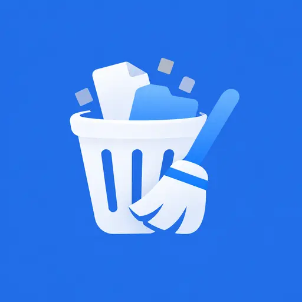

Because Apple charges \$200 for every modest bump in SSD capacity, a large portion of MacBook Air, MacBook Pro, and Mac mini users manage tight 256GB or 512GB internal drives. When the dreaded "Your disk is almost full" prompt inevitably appears, most users turn to Google for help.
Unfortunately, the top search results are dominated by commercial "Mac Cleaners" (such as CleanMyMac, MacKeeper, and CCleaner). These apps charge \$35 to \$60 in recurring annual subscriptions, employ aggressive scare tactics ("Your Mac is infected!"), and install persistent background daemons that consume memory and CPU cycles.
You do not need to pay a penny to keep macOS lean and fast. The open-source community provides powerful, transparent, and completely free utilities that safely purge junk without subscription nags. Here are the finest free and open-source Mac storage cleaner applications in 2026.
Quick Comparison: Free & Open-Source Mac Cleaners
| App | License | Developer Caches | App Leftover Uninstaller | Visual Scanner | Key Advantage |
|---|---|---|---|---|---|
| CleanMac | Open Source (GPL/MIT) | Yes (Xcode, npm, Homebrew) | Yes | Duplicate & large file finder | Native Swift UI, fast, zero telemetry, developer-ready |
| OnyX | Freeware (Titanium Software) | System deep caches | No | No | In-depth system maintenance & rebuild scripts |
| AppCleaner | Freeware (FreeMacSoft) | No | Yes (Drag & Drop) | No | Lightweight gold standard for removing app remnants |
| GrandPerspective | Open Source (GPL) | No | No | Interactive Treemap | Visualizing huge rogue files on full drives |
| OmniDiskSweeper | Freeware (The Omni Group) | Manual | No | Descending list scanner | Super-fast, hierarchical folder size breakdown |
| Pearcleaner | Open Source (GPL-3.0) | No | Yes | No | Modern Swift AppCleaner alternative with auto-trash |
1. CleanMac — Best Native Open-Source System Cleaner for macOS
For developers, creators, and everyday Mac users who want an all-in-one, modern native tool without commercial subscriptions, CleanMac by ByteGif is a breath of fresh air.

CleanMac
CleanMac is engineered specifically for modern Apple Silicon (../M3/M4) and Intel Macs using native Swift. It audits your system in seconds to reveal hidden caches, locates orphaned application support files left behind by uninstalled software, hunts down duplicate files, and clears massive developer build folders (Xcode DerivedData, CocoaPods, npm, and Homebrew caches) that standard cleaners ignore.
- 100% Free and open-source: inspect the code yourself on GitHub
- Reclaims 10GB–50GB of hidden developer & browser caches in one tap
- Full leftover uninstaller: removes deep
~/Libraryfiles - Duplicate file finder with SHA-256 hash validation
- Zero background daemons, zero tracking, and zero subscription fees
Unlike legacy Electron-based utilities that eat hundreds of megabytes of RAM just to scan a disk, CleanMac launches instantaneously and respects your Mac's battery life.
2. OnyX — The Veteran System Maintenance Suite
Created by developer Joël Barrière (Titanium Software), OnyX has been the definitive macOS system utility since OS X Jaguar in 2002. OnyX is not just a storage cleaner—it is a comprehensive operating system maintenance console.
OnyX verifies the internal structure of your APFS boot volume, rebuilds corrupted Spotlight index databases, clears stale kernel extension caches, and executes maintenance scripts that purge archived system crash logs. Each release is crafted specifically for a dedicated macOS major release (Sonoma, Sequoia, etc.).
3. AppCleaner — The Lightweight App Debris Eraser
When you delete an application on macOS by dragging it from /Applications to the Trash, macOS only deletes the .app bundle. It leaves behind megabytes—or sometimes gigabytes—of configuration plist files, cache folders, and application support directories scattered across your hidden ~/Library/ hierarchy.
AppCleaner by FreeMacSoft solves this brilliantly. Simply drag any app into AppCleaner's compact window. It immediately indexes all associated files across Application Support, Caches, Saved Application State, and Preferences, letting you wipe out the entire app footprint with one click.
4. GrandPerspective — Visual Treemap Disk Space Scanner
Sometimes you know your SSD is full, but you have no idea where the storage vanished. GrandPerspective generates a visual treemap where every file on your drive is represented by a colored rectangle whose area is proportional to the file's size on disk.
Huge 20GB forgotten screen recordings, forgotten virtual machine .vmdk files, or orphaned Final Cut Pro render files immediately stand out like giant glowing blocks. Hovering over a block shows its exact file path, and hitting the Reveal in Finder button takes you straight to it.
5. OmniDiskSweeper — Lightning-Fast Hierarchical Scanner
Created by legendary Mac developer The Omni Group, OmniDiskSweeper is the fastest way to browse your Mac's storage as a descending list.
Upon launching, it scans your drive and sorts every folder in order of size. You can quickly drill down from your user folder to see exactly which subfolder is hoarding space. It is completely free and devoid of advertising.
6. Pearcleaner — Modern Swift Open-Source Uninstaller
Pearcleaner is a modern open-source alternative to AppCleaner written entirely in Swift. It features a sleek macOS native UI, supports dark mode, and includes an auto-trash monitoring daemon that prompts you whenever you drag an app to the Trash, asking if you also want to remove its hidden companion caches.
What is Actually Stealing Your Mac's Storage?
If you check System Settings → General → Storage, you will often find an enigmatic grey bar labeled "System Data" (formerly "Other") consuming 50GB to 120GB of your drive. Here is what is usually hiding inside:
- Xcode DerivedData & Simulators:
~/Library/Developer/Xcode/DerivedData/and iOS device simulator runtimes routinely swallow 20GB to 60GB on developer machines. - Web & Media Caches: Chrome, Spotify, Slack, Discord, and Telegram cache streaming media inside
~/Library/Caches/and rarely purge old assets. - Homebrew & Package Managers: Downloaded formula tarballs and outdated versions pile up in
~/Library/Caches/Homebrew/. - Orphaned Application Containers: Old uninstalled apps leave cached databases inside
~/Library/Containers/. - Local Time Machine APFS Snapshots: If you use Time Machine, macOS creates local shadow snapshots when your external backup drive is unplugged.
Safe Mac Cleaning: What to Delete vs. What to Avoid
Safety is paramount when clearing disk space. Follow these cardinal rules:
- 100% Safe to Delete: Xcode DerivedData, uninstalled app Application Support folders, web browser cache files, completed download folders, trash bin contents, and duplicate photo downloads.
- Never Touch: Anything inside
/System/(which macOS protects via SIP anyway),/usr/bin/, iCloud Drive sync files that haven't backed up to the cloud, or active database files inside~/Library/Keychains/.
The Verdict: How to Keep Your Mac Clean for $0
You never need to buy a subscription to maintain peak Mac performance:
- For complete system cleaning, developer cache purges & duplicate detection: Download CleanMac.
- For quick, effortless app uninstalls: Use AppCleaner or Pearcleaner.
- For visualising giant mystery files: Launch GrandPerspective.
- For deep operating system scripts and Spotlight re-indexing: Run OnyX.
About ByteGif Software Studio
ByteGif builds privacy-first tools, media players, and native utilities for Android, macOS, Windows, Linux, and the web. Our mission is to build software with zero bloat, intuitive design, and absolute respect for user data.